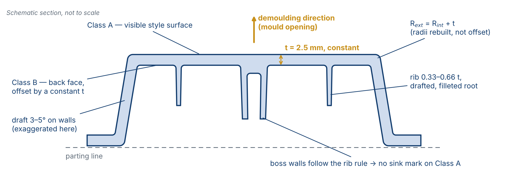
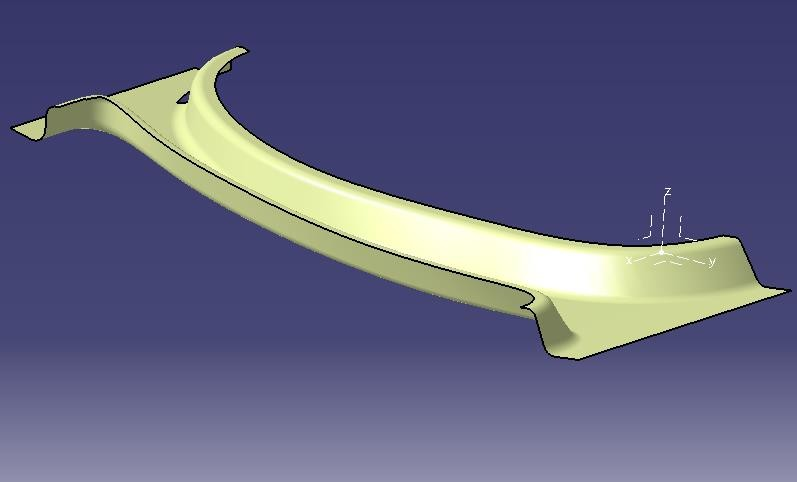
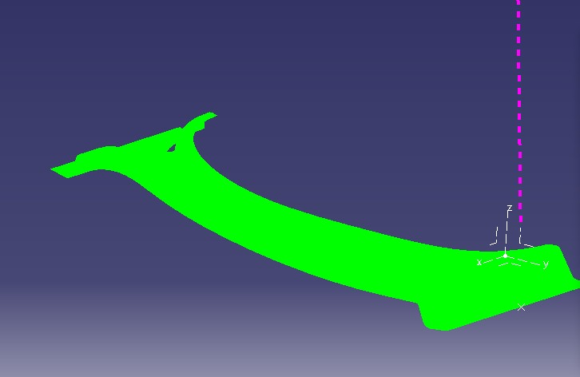
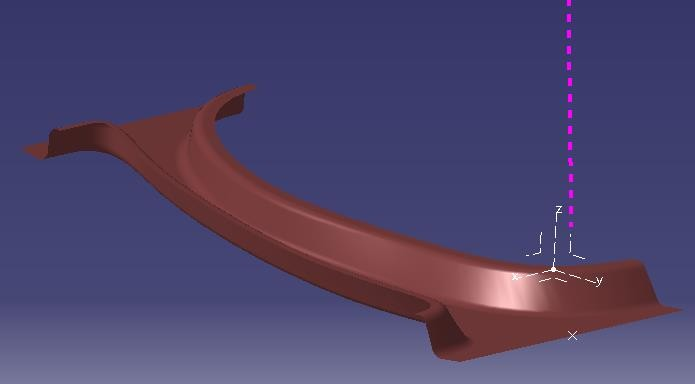
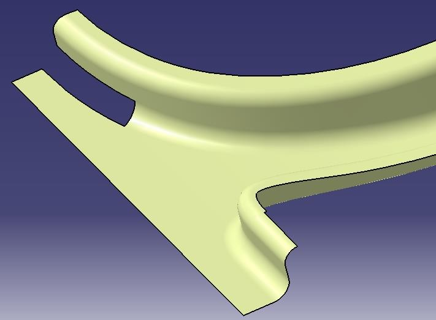
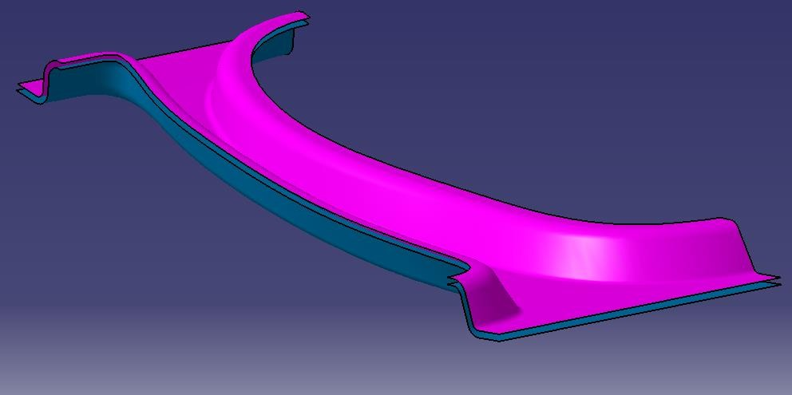
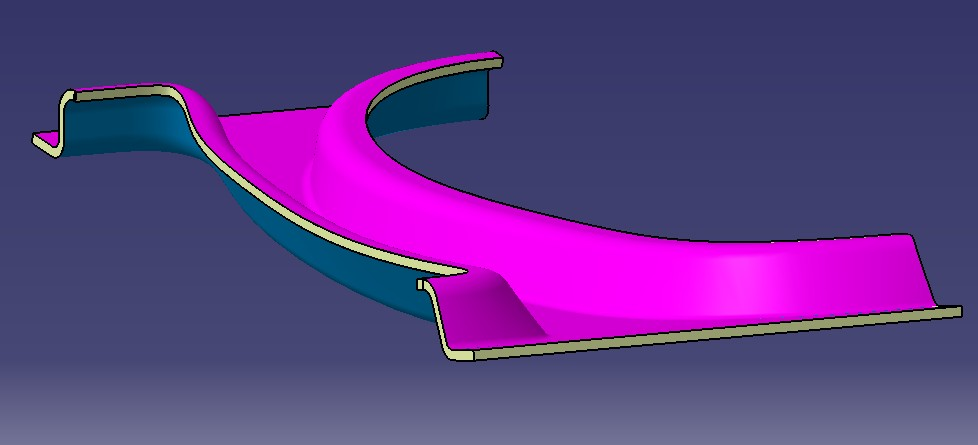
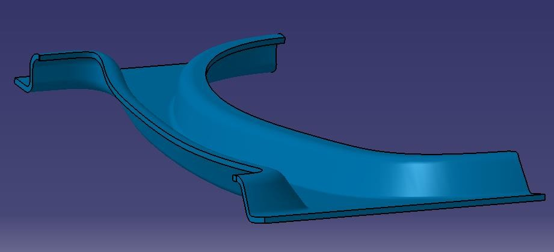
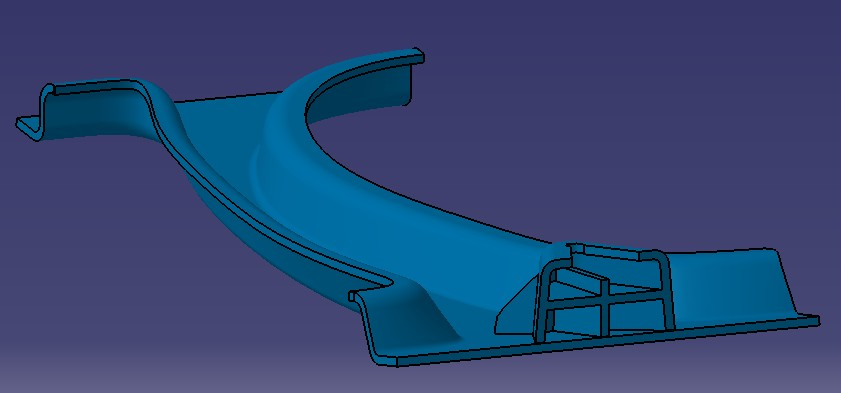
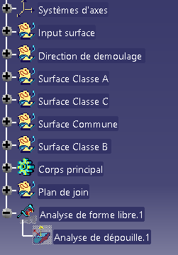

Plastic Part Design Process | Class A / B / C Surfaces | CATIA V5 GSD | Training Project

The B-pillar trim is the plastic cover over a car's central pillar, between the front and rear doors. Like most interior trim it is injection-moulded, so its geometry is shaped as much by the mould as by the styling: every face has to release from the tool, the wall has to stay at one thickness, and the fixings have to sit on the hidden side without marking the visible one.
This project, done during a professional training in plastic part design, follows the path a part takes in an automotive design office: starting from the stylist's surface and ending with a manufacturable solid with its fixing points — all in CATIA V5 Generative Shape Design.
The designer sits between styling and tooling: the inputs come from the stylist, the design office and the toolmaker, and the output is a part the mould can actually produce.
| Inputs | Outputs |
|---|---|
| Style surface (the visible shape) | Validated draft angles |
| Demoulding direction, agreed with the design office and the toolmaker | Validated demoulding direction |
| Parting line, agreed with the toolmaker | Thickened part — the technical definition of the style surface |
| Required draft angle | Fixing clips chosen and sized |
| Surrounding parts and position in the vehicle axis system | Final part with its clips |
The incoming style surface is checked with a draft analysis along the demoulding direction, to find any face that would scrape or lock in the mould. Timing matters: once the tooling has been launched the demoulding direction is frozen, so this is the moment to question it.

The style surface as received, with the vehicle axis system.

Draft analysis along the demoulding direction (the dashed line): green faces release from the mould.
The visible faces are copied into their own geometrical set, the Class A surface. Keeping them separate means any area that needs changing can be marked and sent back to styling without touching the rest of the model.

The visible faces extracted into a dedicated geometrical set.

Close-up of local areas checked before thickening, to be corrected on the style surface if needed.
The back face, Class B, is built at a constant 2.5 mm from Class A. Simply offsetting the fillets would shrink their radii on the inside, so the radii are rebuilt in GSD to keep Rext = Rint + t and an even wall all round.

Class A (magenta) offset to the Class B back face at a constant 2.5 mm.
The edge surfaces that close the part between its faces (Class C) are connected to Class B with multi-section surfaces guided by control points, or with blend surfaces, so the transition stays smooth and the thickness consistent.

The edge surfaces (light) close the part along its outline between the faces.
Once the skin is closed and watertight, it is filled to turn the surface model into a solid part.

The closed skin filled into a solid.
The clip mounts that hold the trim to the body are added on the hidden side, with their supporting ribs, designed to the same thickness rules as the rest of the part so they don't show through on the visible face.

A clip housing with its supporting ribs on the back of the part.

Input surface, demoulding direction, Class A, C and B, parting line and draft analysis each live in their own set, so any stage can be revised without breaking the others.
Step images: reference model from the CAD Engineering training brief.
The rules behind every step are the same: make the part easy to fill, easy to cool evenly, and easy to eject. The section at the top of this page shows them on a single part.
Each rule protects either the visible surface or the cost of the mould. Thick spots cool last and pull the Class A face into sink marks; a face without draft scrapes on ejection; an undercut needs a slide in the tool. Designing to these rules from the first step is what makes the part both good-looking and cheap to produce.
✓ Project Outcomes